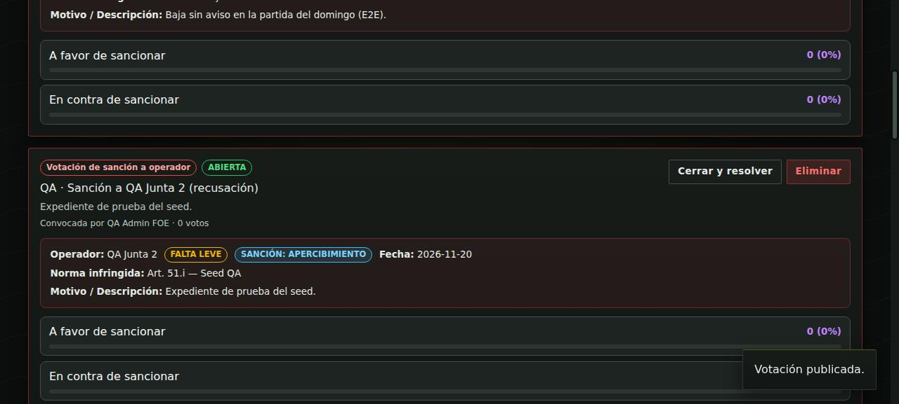
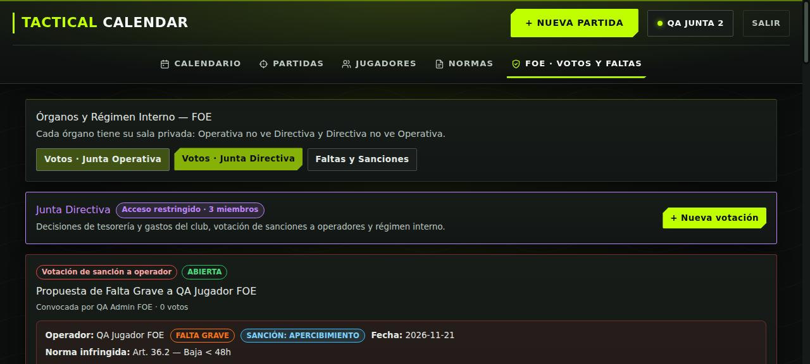
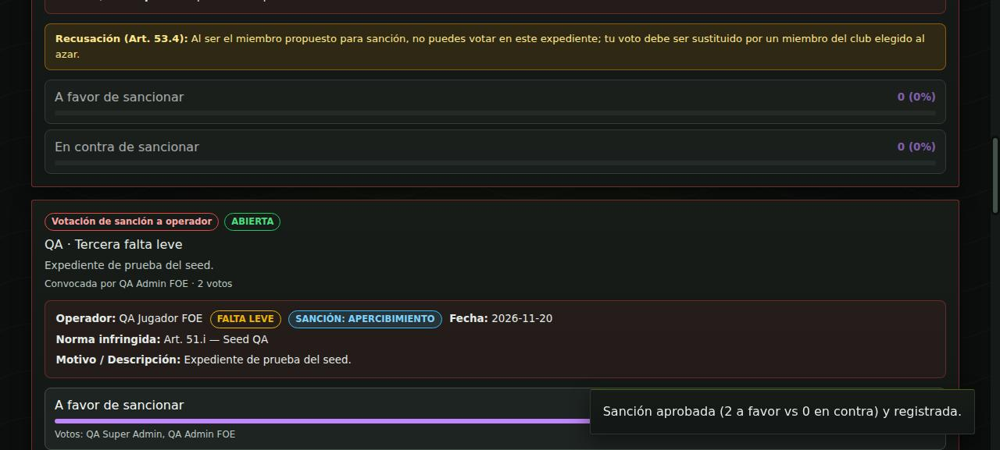
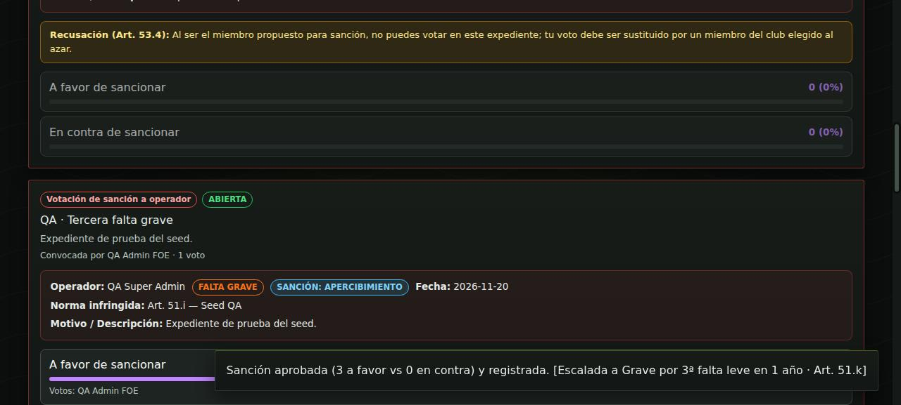
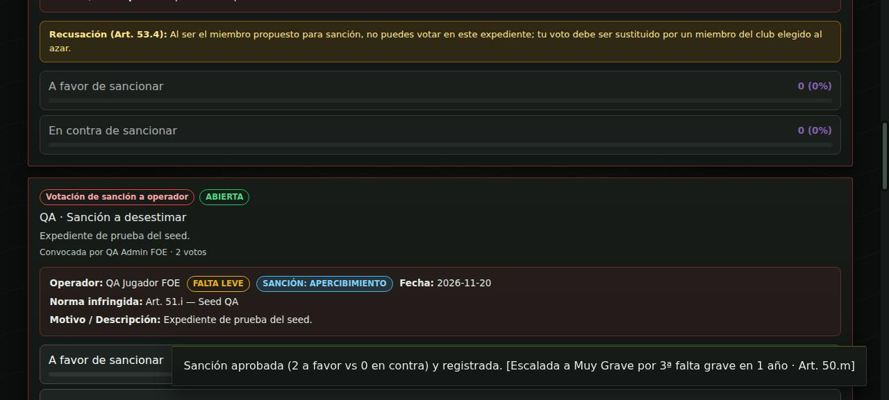
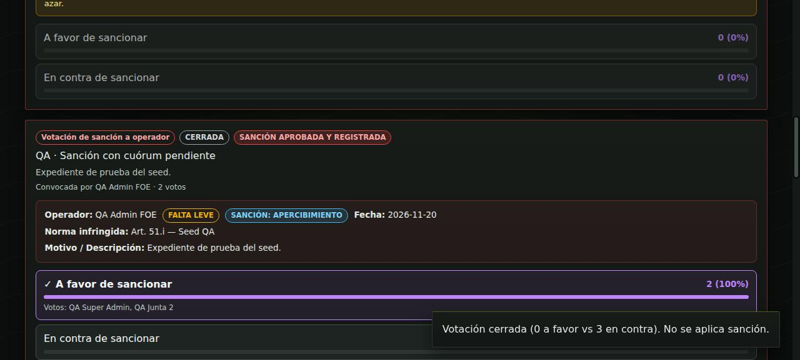
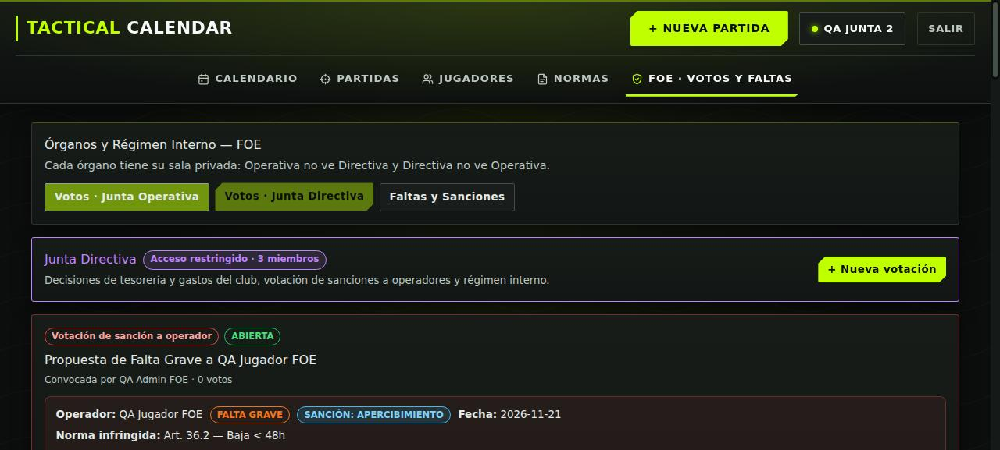
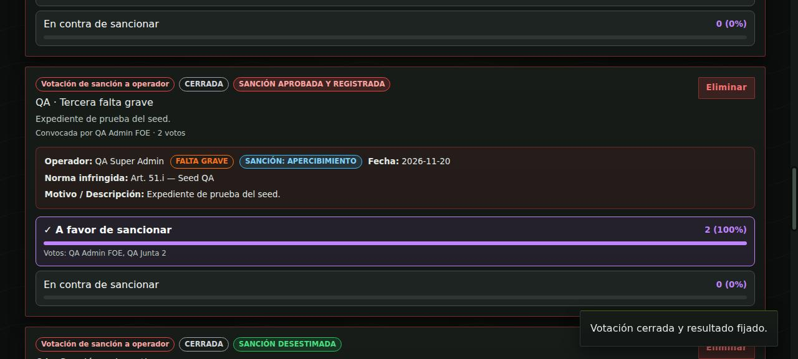

Informe de Selenium Java
Suite e-gobernanza · tactical-calendar · 22/11/2026, 0:04:18 · 28.8 s
100%Tasa de éxito (8 de 8)
8Pasan
0Fallan
0Omitidos
| Pasa | TC-E01 La Junta Directiva abre un expediente sancionador QA Admin FOE Captura |
5.0 s |
| Pasa | TC-E02 El propuesto para sanción queda recusado y no puede votar QA Junta 2 Captura |
2.7 s |
| Pasa | TC-E03 El expediente se cierra solo al votar el último miembro habilitado QA Junta 2 Captura |
4.2 s |
| Pasa | TC-E04 La 3ª falta leve en un año se escala a Grave QA Junta 2 Captura |
4.2 s |
| Pasa | TC-E05 La 3ª falta grave en un año se escala a Muy Grave QA Junta 2 Captura |
5.1 s |
| Pasa | TC-E06 Con mayoría en contra el expediente se cierra sin sanción QA Junta 2 Captura |
3.4 s |
| Pasa | TC-E07 Solo quien convoca (o el super admin) puede cerrar una votación a mano QA Junta 2 Captura |
2.5 s |
| Pasa | TC-E08 Quien convocó la votación puede cerrarla a mano QA Admin FOE Captura |
3.6 s |